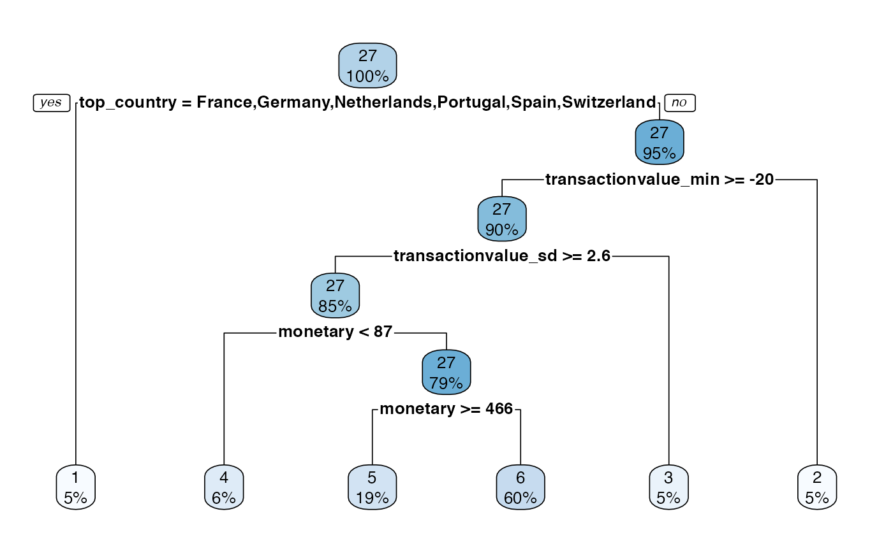

Tree
Tree.Rmd
library(citrus)
library(dplyr)
#>
#> Attaching package: 'dplyr'
#> The following objects are masked from 'package:stats':
#>
#> filter, lag
#> The following objects are masked from 'package:base':
#>
#> intersect, setdiff, setequal, union
library(rpart.plot)
#> Loading required package: rpartThe CITRUS package has several different approaches to running segmentation. The approach discussed here is based around the tree based modelling.
This approach is a supervised machine learning approach that takes a customer level data frame with a response and features as the columns. A decision tree splits the data frame into n many leaves by a process called recursive partitioning using gini impurity as a splitting metric for each step in the tree. To understand more about decision trees see here (https://towardsdatascience.com/decision-trees-explained-3ec41632ceb6). The r package used to run the decision trees in this context is rpart.
Some Examples
One approach to run this type of segmentation can be called by using the segment function. Within the segment function there is a hyperparameter called modeltype that can be set to tree. Depending on what is defined in steps (see https://peak-ai.github.io/CITRUS/articles/segment.html), this will run the pipeline and the tree functions to produce the output table, predicted values and the model object. The segment function requires a data frame to segment upon, and also some hyperparameters that provide a prettified output and a plot of the rpart.plot object. More details on visualisation can be seen in the section below.
output <- segment(citrus::preprocessed_data,
modeltype = 'tree',
steps = c('model'),
prettify = T,
print_plot = TRUE)
#> Setting up model
#> Tree based model chosen
#> Validating input data
#> Using default hyper-parameters
#> Training model
#> Number of segments: 6
#> Prettifying output data
#> Abstracting model
#> Generating output table
#> Warning: `summarise_each_()` was deprecated in dplyr 0.7.0.
#> Please use `across()` instead.
#> Warning: `funs()` was deprecated in dplyr 0.8.0.
#> Please use a list of either functions or lambdas:
#>
#> # Simple named list:
#> list(mean = mean, median = median)
#>
#> # Auto named with `tibble::lst()`:
#> tibble::lst(mean, median)
#>
#> # Using lambdas
#> list(~ mean(., trim = .2), ~ median(., na.rm = TRUE))
#> Finished!
Another approach can be called by using the tree_segment function. Within the tree_segment function there are hyperparameters that require to be passed as a list object and the dataframe that will be used to segment. The output provided is a list containing the tree object (persona_model), a summary table (persona_tree), the predicted values (persona_predicted) and the model input parameters (model_inputs).
hyperparameters <- list(dependent_variable = 'response',
min_segmentation_fraction = 0.05,
number_of_personas = 6,
print_plot = FALSE,
print_safety_check=20)
model <- tree_segment(citrus::preprocessed_data, hyperparameters)Hyperparameters
This algorithm typically uses certain hyperparameters that help prevent over/underfitting. As an adaptation, the hyperparameters have been tuned to prune the tree in order to provide an understandable set of segments. The hyperparameters for this approach can be seen below.
| Type | Method | Hyperparameter Name | Description |
|---|---|---|---|
| Global | segmentation_variables |
array, names of all variables to segment on |
|
| Method | tree | dependent_variable |
character, name of the variable to be used as dependent variable |
| Method | tree | min_segmentation_fraction |
numeric, the maximum size of the smallest possible segment (0.05 is 5% of the number of customers passed) |
| Method | tree | number_of_personas |
numeric, the number of segments to be produced |
Visualisations
Following the use of the tree_segment function, the rpart object can be visualised. However, the standard plotting functionality has some problems with certain data so there is prettify functionality added that provides nicer visualisations.
# model <- tree_segment(citrus::preprocessed_data, hyperparameters)
rpart.plot(model$persona_model)
#> Warning: Cannot retrieve the data used to build the model (so cannot determine roundint and is.binary for the variables).
#> To silence this warning:
#> Call rpart.plot with roundint=FALSE,
#> or rebuild the rpart model with model=TRUE.
Prettify
The prettify functionality, not only produces a nicer decision tree plot, it also provides a nicer summary table too. The input required for the function is the output of the tree_segment function.
#model <- tree_segment(citrus::preprocessed_data, hyperparameters)
model <- tree_segment_prettify(model,print_plot = T)